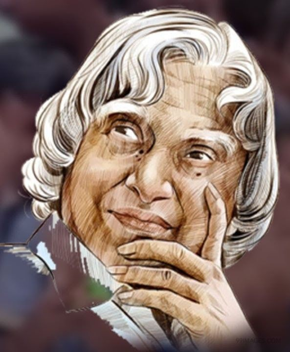

"Excellence is a Continuous Process and not an Accident."
A.P.J Abdul Kalam, in full Abul Pakir Jainulabdeen Abdul Kalam, was born on October 15, 1931, in Rameswaram, Tamil Nadu, India. He served as the 11th President of India from 2002 to 2007. Kalam earned a degree in aeronautical engineering from the Madras Institute of Technology and in 1958 joined the Defence Research and Development Organisation (DRDO). In 1969, he moves to the Indian Space Research Organisation, where he was project director of the SLV-III, the first satellite launch vehicle that was both designed and produced in India. Rejoinig DRDO in 1982, Kalam planned the program that produced a number of successful missiles, which helped earn him the Nickname "Missile Man". Among those successes was Agni, India's first intermediat-range ballistic missile, which incorporated aspects of the SLV-III and was launched in 1989. He also played a pivotal organisational, technical, and political role in India's Pokhran-II nunclear tests in 1998, the first since the original nuclear tests in 1998, the first since the original nuclear test by India in 1974. From 1992 to 1997 Kalam was scientific adviser to the defense minister, and he later served as principal scientific adviser (1999-2001) to the government with the rank of cabient minister. His prominent role in the country's 1998 nuclear power and established Kalam as a national hero, although the tests caused great concern in the international community.